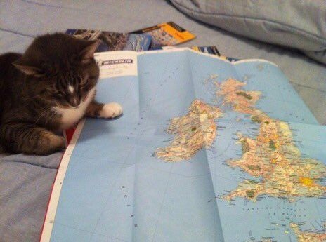
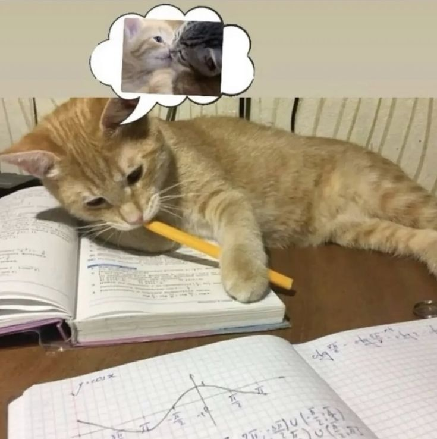
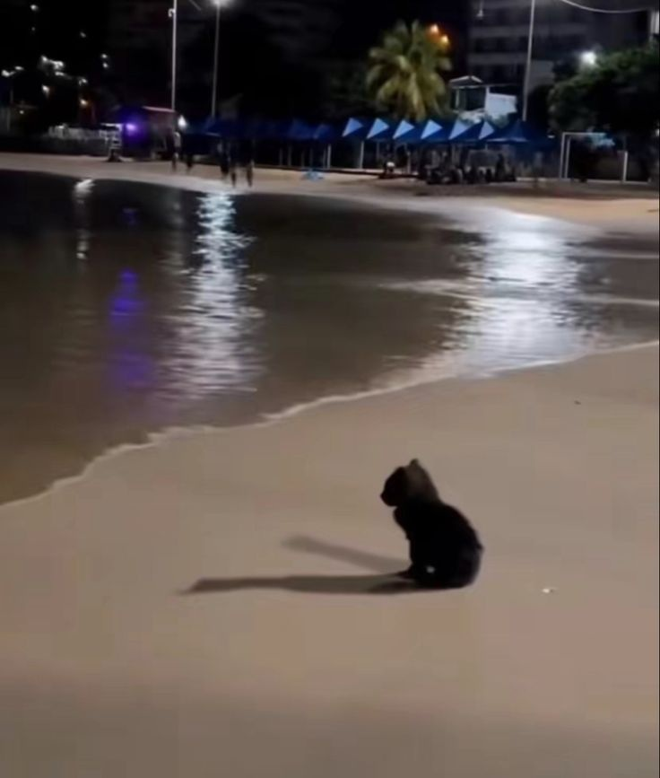
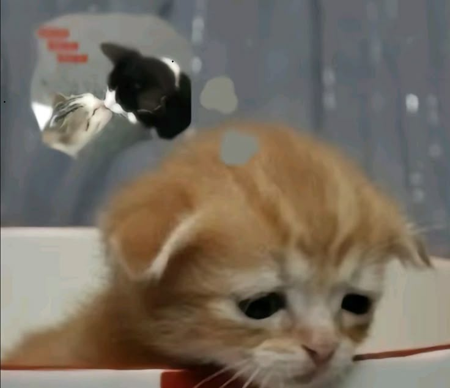
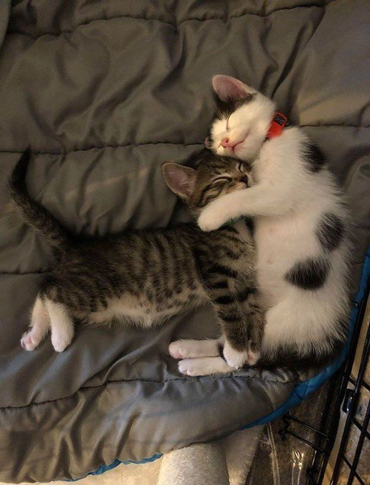

❤️ Set the Fire to the Third Bar ❤️Snow Patrol ft. Martha Wainwright
I find the map and draw a straight lineEncuentro el mapa y dibujo una linea

Over rivers, farms and state linesSobre ríos, granjas y fronteras
The distance from "A" to where you'd "B"La distancia desde el punto "A" hasta donde tú estariás

It's only finger lengths that I seeSon solo medidas de dedos lo que veo
I touch the placeToco el lugar
Where I'd find your faceDonde encontraría tu rostro
My fingers in creasesMis dedos en los pliegues
Of distant dark placesDe distantes sitios oscuros
I hang my coat up in the first barCuelgo mi abrigo en el primer bar
There is no peace that I've found so farNo hay paz que haya encontrado hasta ahora
The laughter penetrates my silenceLas risas penetran en mi silencio

As drunken men find flaws in scienceComo borrachos encontrando errores en la ciencia
Their words mostly noises...Sus palabras no son más que ruidos...
Ghosts with just voices...Solo fantasmas con voces...
Your words in my memoryTus palabras en mi memoria

Are like music to meSon como música para mí
And miles from where you areY a millas de donde estás
I lay down on the cold ground and I...Me acuesto en el suelo frío y yo...
I pray that something picks me upRuego para que algo me levante
And sets me down in your warm arms...Y me lleve a tus cálidos brazos...
After I have traveled so farDespués de haber viajado tanto
We'd set the fire to the third barPrenderiamos fuego a la tercera barra de la estufa
We'd share each other like an islandNos compartiríamos el uno al otro como una isla
Until exhausted close our eyelidsHasta que agotados cerremos nuestros párpados
And dreaming pick up from...Y soñando, levantarnos del...

The last place we left offUltimo lugar que dejamos
Your soft skin is weepingTu suave piel está llorando
A joy you can't keep inUna alegría que no puedes contener
And miles from where you areY a millas de donde estás
I lay down on the cold ground and I...Me acuesto en el suelo frío y yo...
I pray that something picks me upRuego para que algo me levante
And sets me down in your warm arms...Y me lleve a tus cálidos brazos...
🎶 Instrumental 🎶
And miles from where you areY a millas de donde estás
I lay down on the cold ground and I...Me acuesto en el suelo frío y yo...
I pray that something picks me upRuego para que algo me levante
And sets me down in your warm arms...Y me lleve a tus cálidos brazos...
❤️ Tus palabras siempre serán mi música ❤️
❤️ favorita. ❤️Uniendo Cada Linea Del Mapa Hasta Encontrarnos
❤️ favorita. ❤️Uniendo Cada Linea Del Mapa Hasta Encontrarnos